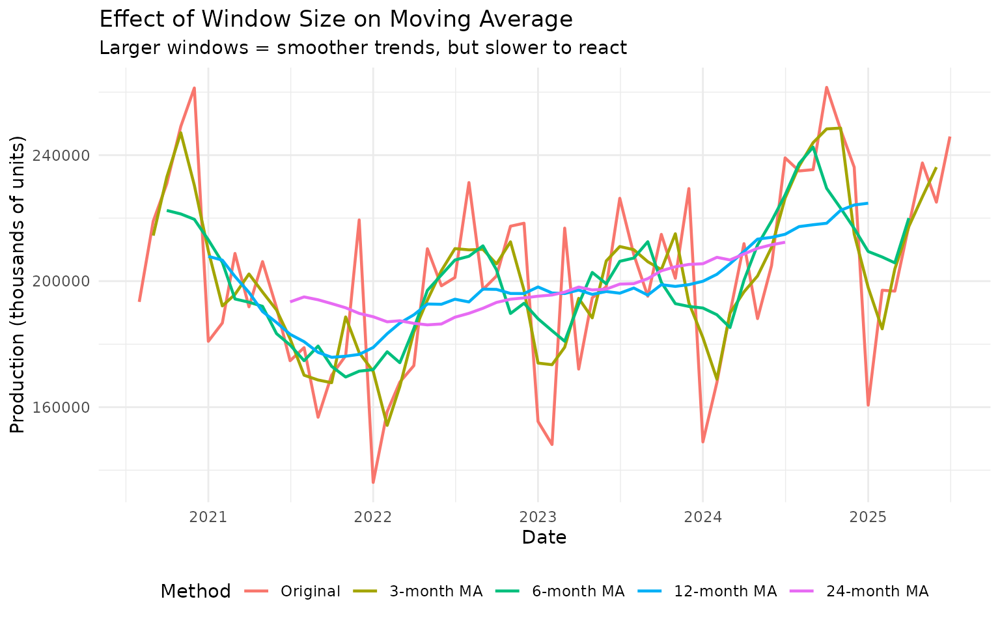
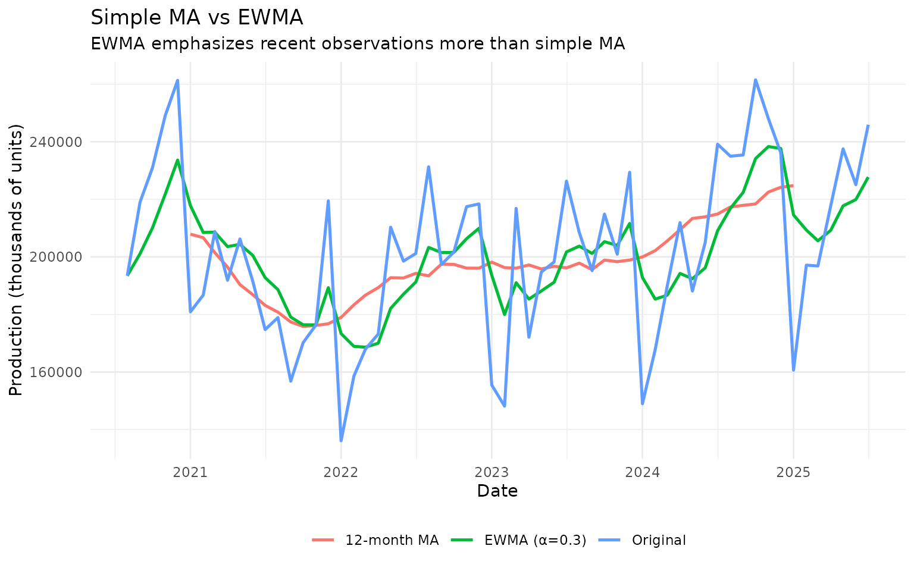
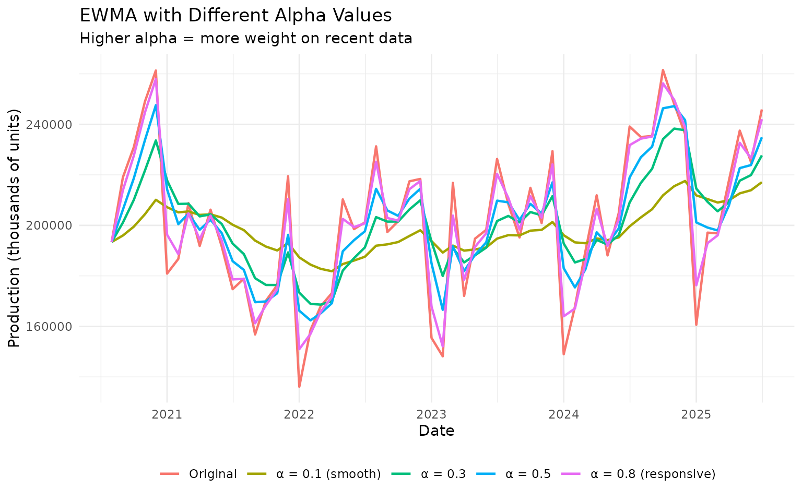
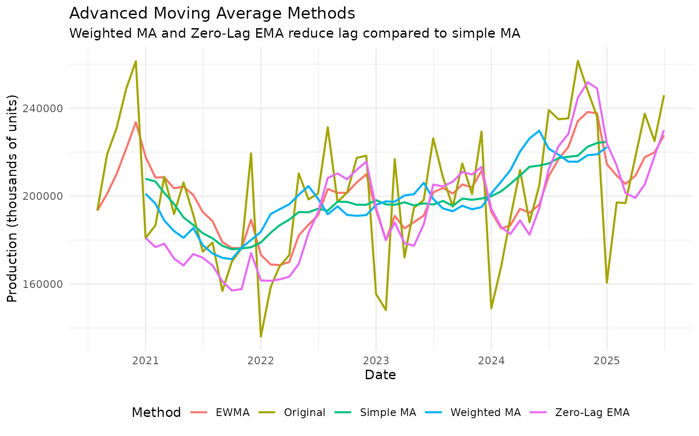
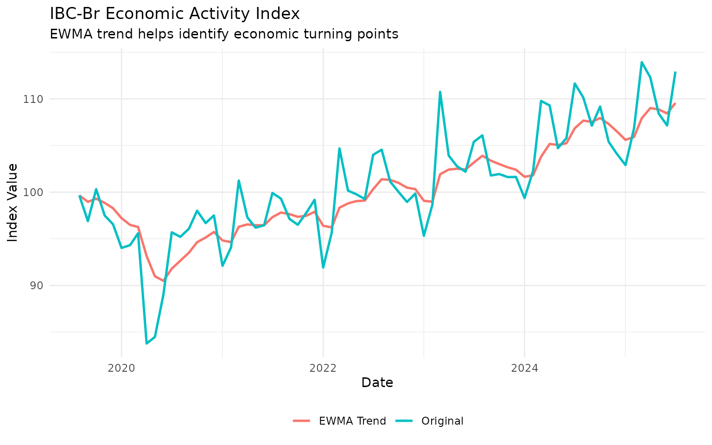
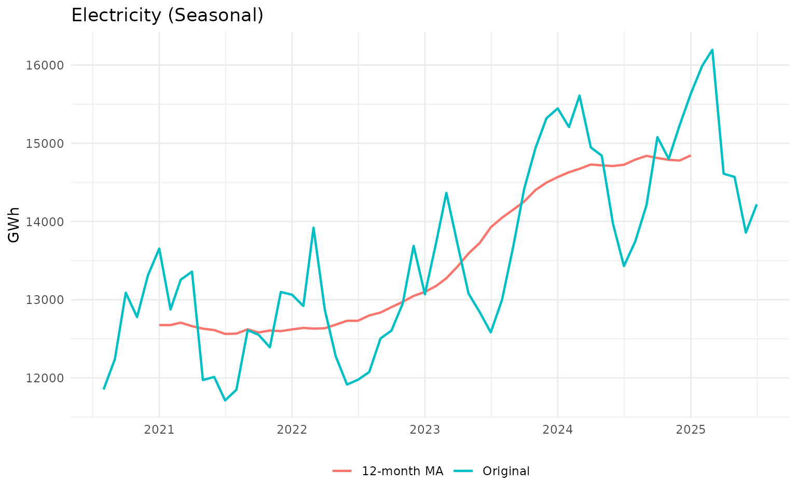
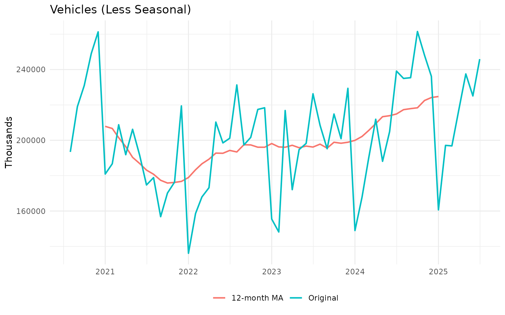
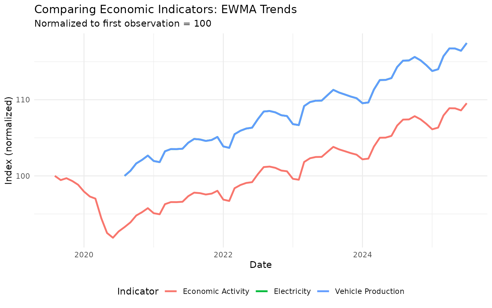

library(trendseries)
library(dplyr)
library(ggplot2)
library(tidyr)
# Load data
data("vehicles", "ibcbr", "electric", package = "trendseries")Introduction
Moving averages are one of the most intuitive and widely-used tools for extracting trends from time series data. The basic idea is simple: average nearby observations to smooth out random fluctuations.
This vignette explores the different types of moving averages
available in trendseries, when to use each one, and how to
choose appropriate parameters.
When to Use Moving Averages
Moving averages work well when: - You want a simple, interpretable trend - Your data has short-term noise you want to filter out - You’re doing preliminary exploratory analysis - You need a trend that’s easy to explain to non-technical audiences
They’re less suitable when: - Your data has strong seasonal patterns (use STL instead) - You need to preserve specific features like peaks or valleys (use Savitzky-Golay) - You’re analyzing business cycles (use HP, BK, or CF filters)
Simple Moving Average: The Foundation
The simple moving average (MA) calculates the mean of the last n observations. It’s the easiest method to understand and implement.
How It Works
For a 12-month moving average, each point is the average of the current month plus the previous 11 months:
MA(t) = (X(t) + X(t-1) + X(t-2) + ... + X(t-11)) / 12Basic Example
Let’s start with vehicle production data:
# Use recent data (last 5 years)
vehicles_recent <- vehicles |>
slice_tail(n = 60)
# Apply 12-month moving average
vehicles_ma <- vehicles_recent |>
augment_trends(
value_col = "vehicles",
methods = "ma",
window = 12
)
# View results
head(vehicles_ma)
#> # A tibble: 6 × 3
#> date vehicles trend_ma
#> <date> <dbl> <dbl>
#> 1 2020-08-01 193421 NA
#> 2 2020-09-01 219033 NA
#> 3 2020-10-01 230927 NA
#> 4 2020-11-01 249104 NA
#> 5 2020-12-01 261321 NA
#> 6 2021-01-01 180904 207884.Let’s visualize the smoothing effect:
# Prepare plot data
plot_data <- vehicles_ma |>
select(date, vehicles, trend_ma) |>
pivot_longer(
cols = c(vehicles, trend_ma),
names_to = "series",
values_to = "value"
) |>
mutate(
series = ifelse(series == "vehicles", "Original Data", "12-Month MA")
)
# Plot
ggplot(plot_data, aes(x = date, y = value, color = series)) +
geom_line(linewidth = 0.9) +
labs(
title = "Vehicle Production: Simple Moving Average",
subtitle = "12-month window smooths out month-to-month variation",
x = "Date",
y = "Production (thousands of units)",
color = NULL
) +
theme_minimal() +
theme(legend.position = "bottom")The moving average (in teal/blue) clearly shows the underlying trend by filtering out the month-to-month noise.
Choosing the Right Window Size
The window size (period) determines how smooth your trend will be:
- Small windows (3-6): More responsive, track changes quickly, but may include noise
- Medium windows (12): Balance between smoothness and responsiveness (one year for monthly data)
- Large windows (24+): Very smooth, but slow to react to changes
Let’s compare different window sizes:
# Apply different window sizes
windows_to_test <- c(3, 6, 12, 24)
# Start with original data
vehicles_windows <- vehicles_recent
# Add each window size
for (w in windows_to_test) {
temp <- vehicles_recent |>
augment_trends(value_col = "vehicles", methods = "ma", window = w) |>
select(trend_ma)
names(temp) <- paste0("ma_", w, "m")
vehicles_windows <- bind_cols(vehicles_windows, temp)
}
# Prepare for plotting
plot_data <- vehicles_windows |>
select(date, vehicles, starts_with("ma_")) |>
pivot_longer(
cols = c(vehicles, starts_with("ma_")),
names_to = "method",
values_to = "value"
) |>
mutate(
method = case_when(
method == "vehicles" ~ "Original",
method == "ma_3m" ~ "3-month MA",
method == "ma_6m" ~ "6-month MA",
method == "ma_12m" ~ "12-month MA",
method == "ma_24m" ~ "24-month MA"
),
method = factor(method, levels = c("Original", "3-month MA", "6-month MA",
"12-month MA", "24-month MA"))
)
# Plot
ggplot(plot_data, aes(x = date, y = value, color = method)) +
geom_line(linewidth = 0.8) +
labs(
title = "Effect of Window Size on Moving Average",
subtitle = "Larger windows = smoother trends, but slower to react",
x = "Date",
y = "Production (thousands of units)",
color = "Method"
) +
theme_minimal() +
theme(legend.position = "bottom")
Notice how the 24-month MA is very smooth but “lags” behind changes, while the 3-month MA tracks the data closely but still shows some fluctuation.
Understanding Alignment: Center vs Right vs Left
Moving averages can be calculated with different alignments, which determines which observations are used to calculate each point. This is a critical choice that affects both the trend’s properties and when NAs appear in the result.
The Three Alignment Options
-
Center alignment (default): Uses observations both
before and after each point
- Most common for general trend extraction
- Produces NAs at both the beginning and end of the series
- Non-causal: uses future information
-
Right alignment (causal): Uses only past
observations
- Critical for real-time analysis and forecasting
- Produces NAs only at the beginning
- No look-ahead bias: suitable for backtesting strategies
- Also called “trailing” or “backward-looking”
-
Left alignment (anti-causal): Uses only future
observations
- Rarely used in practice
- Produces NAs only at the end
- Useful for specific smoothing applications
When to Use Each Alignment
Use center alignment when: - Doing historical analysis where all data is available - You want the smoothest possible trend - The symmetric window makes sense for your application
Use right alignment when: - Building forecasting models (avoid look-ahead bias) - Backtesting trading strategies or economic indicators - Analyzing data in real-time (can’t use future data) - Need causal filters for time series econometrics
Use left alignment when: - Specific smoothing applications that need forward-looking averages - Very rarely used in economic analysis
Visualizing Different Alignments
Let’s compare the three alignments using vehicle production data:
# Apply 12-month moving average with different alignments
vehicles_align <- vehicles_recent |>
augment_trends(
value_col = "vehicles",
methods = "ma",
window = 12,
align = "center"
) |>
rename(trend_center = trend_ma)
# Add right alignment
vehicles_align <- vehicles_align |>
augment_trends(
value_col = "vehicles",
methods = "ma",
window = 12,
align = "right"
) |>
rename(trend_right = trend_ma)
# Add left alignment
vehicles_align <- vehicles_align |>
augment_trends(
value_col = "vehicles",
methods = "ma",
window = 12,
align = "left"
) |>
rename(trend_left = trend_ma)
# Prepare for plotting
plot_data <- vehicles_align |>
select(date, vehicles, starts_with("trend_")) |>
pivot_longer(
cols = starts_with("trend_"),
names_to = "alignment",
values_to = "value"
) |>
mutate(
alignment = case_when(
alignment == "trend_center" ~ "Center (default)",
alignment == "trend_right" ~ "Right (causal)",
alignment == "trend_left" ~ "Left (anti-causal)"
),
alignment = factor(
alignment,
levels = c("Center (default)", "Right (causal)", "Left (anti-causal)")
)
)
# Plot
ggplot(plot_data, aes(x = date, y = value, color = alignment)) +
geom_line(linewidth = 0.9, alpha = 0.8) +
labs(
title = "Moving Average Alignment Comparison",
subtitle = "12-month window with different alignments",
x = "Date",
y = "Production (thousands of units)",
color = "Alignment"
) +
theme_minimal() +
theme(legend.position = "bottom")
Notice how: - Center is smoothest and symmetric - Right lags behind center (uses only past data) - Left leads ahead of center (uses only future data)
Practical Example: Real-Time Forecasting
For real-time analysis, right alignment is essential. Let’s simulate what a forecaster would have seen at different points in time:
# Simulate real-time analysis: what would we see in Dec 2022?
cutoff_date <- as.Date("2022-12-31")
# Data available up to cutoff
historical_data <- vehicles |>
filter(date <= cutoff_date)
# Apply right-aligned MA (what we could compute in real-time)
realtime_ma <- historical_data |>
augment_trends(
value_col = "vehicles",
methods = "ma",
window = 12,
align = "right"
)
# Show last 6 months of trend
realtime_ma |>
slice_tail(n = 6) |>
select(date, vehicles, trend_ma)
#> # A tibble: 6 × 3
#> date vehicles trend_ma
#> <date> <dbl> <dbl>
#> 1 2022-07-01 201167 178954.
#> 2 2022-08-01 231304 183321.
#> 3 2022-09-01 197346 186700.
#> 4 2022-10-01 201632 189321.
#> 5 2022-11-01 217446 192748.
#> 6 2022-12-01 218390 192660.With right alignment, the trend is available immediately as new data arrives, making it suitable for real-time monitoring dashboards and nowcasting applications.
Alignment and Missing Values
Different alignments produce NAs in different locations:
# Check NA pattern for each alignment
na_summary <- vehicles_align |>
summarise(
center_nas = sum(is.na(trend_center)),
right_nas = sum(is.na(trend_right)),
left_nas = sum(is.na(trend_left))
)
na_summary
#> # A tibble: 1 × 3
#> center_nas right_nas left_nas
#> <int> <int> <int>
#> 1 11 11 11For a 12-month window: - Center: ~6 NAs at start and ~6 at end - Right: ~11 NAs at start, none at end (can compute trend up to present) - Left: None at start, ~11 NAs at end
Exponentially Weighted Moving Average (EWMA)
Unlike simple MA which weights all observations equally, EWMA gives more weight to recent observations. This makes it more responsive to recent changes.
How It Works
EWMA uses a smoothing parameter α (alpha) between 0 and 1:
EWMA(t) = α × X(t) + (1 - α) × EWMA(t-1)- Higher α (e.g., 0.7): More responsive to recent data
- Lower α (e.g., 0.1): Smoother, similar to long-window MA
Comparing MA and EWMA
# Apply both methods separately (EWMA cannot use both window and smoothing)
# First: MA with window parameter
vehicles_ma <- vehicles_recent |>
augment_trends(
value_col = "vehicles",
methods = "ma",
window = 12
)
# Second: EWMA with smoothing (alpha) parameter
vehicles_ewma <- vehicles_recent |>
augment_trends(
value_col = "vehicles",
methods = "ewma",
smoothing = 0.3
)
# Combine the results
vehicles_ma_ewma <- vehicles_recent |>
left_join(
select(vehicles_ma, date, trend_ma),
by = "date"
) |>
left_join(
select(vehicles_ewma, date, trend_ewma),
by = "date"
)
# Prepare for plotting
plot_data <- vehicles_ma_ewma |>
select(date, vehicles, trend_ma, trend_ewma) |>
pivot_longer(
cols = c(vehicles, trend_ma, trend_ewma),
names_to = "method",
values_to = "value"
) |>
mutate(
method = case_when(
method == "vehicles" ~ "Original",
method == "trend_ma" ~ "12-month MA",
method == "trend_ewma" ~ "EWMA (α=0.3)"
)
)
# Plot
ggplot(plot_data, aes(x = date, y = value, color = method)) +
geom_line(linewidth = 0.9) +
labs(
title = "Simple MA vs EWMA",
subtitle = "EWMA emphasizes recent observations more than simple MA",
x = "Date",
y = "Production (thousands of units)",
color = NULL
) +
theme_minimal() +
theme(legend.position = "bottom")
Choosing Alpha for EWMA
Let’s see how different alpha values affect the trend:
# Test different alpha values
alphas <- c(0.1, 0.3, 0.5, 0.8)
vehicles_alphas <- vehicles_recent
for (a in alphas) {
temp <- vehicles_recent |>
augment_trends(value_col = "vehicles", methods = "ewma", smoothing = a) |>
select(trend_ewma)
names(temp) <- paste0("ewma_", a)
vehicles_alphas <- bind_cols(vehicles_alphas, temp)
}
# Plot
plot_data <- vehicles_alphas |>
select(date, vehicles, starts_with("ewma_")) |>
pivot_longer(
cols = c(vehicles, starts_with("ewma_")),
names_to = "method",
values_to = "value"
) |>
mutate(
method = case_when(
method == "vehicles" ~ "Original",
method == "ewma_0.1" ~ "α = 0.1 (smooth)",
method == "ewma_0.3" ~ "α = 0.3",
method == "ewma_0.5" ~ "α = 0.5",
method == "ewma_0.8" ~ "α = 0.8 (responsive)"
)
)
ggplot(plot_data, aes(x = date, y = value, color = method)) +
geom_line(linewidth = 0.8) +
labs(
title = "EWMA with Different Alpha Values",
subtitle = "Higher alpha = more weight on recent data",
x = "Date",
y = "Production (thousands of units)",
color = NULL
) +
theme_minimal() +
theme(legend.position = "bottom")
Guidelines for alpha: - Smooth trend: α = 0.1 to 0.2 - Balanced: α = 0.3 to 0.4 - Responsive: α = 0.5 to 0.7 - Very responsive: α = 0.8+
Advanced Moving Averages
The trendseries package includes several advanced MA
methods designed to reduce lag while maintaining smoothness.
Comparing Advanced Methods
# Apply multiple advanced MA methods
# Note: EWMA uses smoothing, other methods use window
# Apply window-based methods
vehicles_window_methods <- vehicles_recent |>
augment_trends(
value_col = "vehicles",
methods = c("ma", "wma", "zlema"),
window = 12
)
# Apply EWMA with smoothing parameter
vehicles_ewma_method <- vehicles_recent |>
augment_trends(
value_col = "vehicles",
methods = "ewma",
smoothing = 0.3
)
# Combine results
vehicles_advanced <- vehicles_recent |>
left_join(
select(vehicles_window_methods, date, starts_with("trend_")),
by = "date"
) |>
left_join(
select(vehicles_ewma_method, date, trend_ewma),
by = "date"
)
# Prepare for plotting
plot_data <- vehicles_advanced |>
select(date, vehicles, starts_with("trend_")) |>
pivot_longer(
cols = c(vehicles, starts_with("trend_")),
names_to = "method",
values_to = "value"
) |>
mutate(
method = case_when(
method == "vehicles" ~ "Original",
method == "trend_ma" ~ "Simple MA",
method == "trend_ewma" ~ "EWMA",
method == "trend_wma" ~ "Weighted MA",
method == "trend_zlema" ~ "Zero-Lag EMA"
)
)
# Plot
ggplot(plot_data, aes(x = date, y = value, color = method)) +
geom_line(linewidth = 0.8) +
labs(
title = "Advanced Moving Average Methods",
subtitle = "Weighted MA and Zero-Lag EMA reduce lag compared to simple MA",
x = "Date",
y = "Production (thousands of units)",
color = "Method"
) +
theme_minimal() +
theme(legend.position = "bottom")
Method Characteristics
| Method | Smoothness | Responsiveness | Complexity | Best For |
|---|---|---|---|---|
| MA | High | Low | Very Simple | Stable trends, teaching |
| EWMA | Medium | Medium | Simple | General purpose, recent data matters |
| Weighted MA | Medium | Medium | Simple | Emphasizing recent observations |
| Zero-Lag EMA | Medium | High | Moderate | Reducing lag in exponential smoothing |
Practical Applications
Application 1: Identifying Trend Changes
Moving averages help identify when trends change direction. Let’s look at the IBC-Br economic activity index:
# Get recent IBC-Br data
ibcbr_recent <- ibcbr |>
slice_tail(n = 72)
# Apply EWMA for responsiveness
ibcbr_trend <- ibcbr_recent |>
augment_trends(
value_col = "ibcbr",
methods = "ewma",
smoothing = 0.25
)
# Prepare plot
plot_data <- ibcbr_trend |>
select(date, ibcbr, trend_ewma) |>
pivot_longer(
cols = c(ibcbr, trend_ewma),
names_to = "series",
values_to = "value"
) |>
mutate(
series = ifelse(series == "ibcbr", "Original", "EWMA Trend")
)
# Plot
ggplot(plot_data, aes(x = date, y = value, color = series)) +
geom_line(linewidth = 0.9) +
labs(
title = "IBC-Br Economic Activity Index",
subtitle = "EWMA trend helps identify economic turning points",
x = "Date",
y = "Index Value",
color = NULL
) +
theme_minimal() +
theme(legend.position = "bottom")
Application 2: Seasonal vs Non-Seasonal Data
Moving averages work differently on seasonal data. Let’s compare electricity consumption (seasonal) with vehicle production (less seasonal):
# Get recent electricity data (seasonal)
electric_recent <- electric |>
slice_tail(n = 60)
# Apply same 12-month MA to both series
electric_ma <- electric_recent |>
augment_trends(value_col = "electric", methods = "ma", window = 12)
vehicles_ma_comp <- vehicles_recent |>
augment_trends(value_col = "vehicles", methods = "ma", window = 12)
# Create plots
p1 <- electric_ma |>
select(date, electric, trend_ma) |>
pivot_longer(cols = c(electric, trend_ma), names_to = "series") |>
mutate(series = ifelse(series == "electric", "Original", "12-month MA")) |>
ggplot(aes(x = date, y = value, color = series)) +
geom_line(linewidth = 0.8) +
labs(
title = "Electricity (Seasonal)",
x = NULL,
y = "GWh",
color = NULL
) +
theme_minimal() +
theme(legend.position = "bottom")
p2 <- vehicles_ma_comp |>
select(date, vehicles, trend_ma) |>
pivot_longer(cols = c(vehicles, trend_ma), names_to = "series") |>
mutate(series = ifelse(series == "vehicles", "Original", "12-month MA")) |>
ggplot(aes(x = date, y = value, color = series)) +
geom_line(linewidth = 0.8) +
labs(
title = "Vehicles (Less Seasonal)",
x = NULL,
y = "Thousands",
color = NULL
) +
theme_minimal() +
theme(legend.position = "bottom")
# Display plots
print(p1)
print(p2)
Key insight: For strongly seasonal data like electricity consumption, a 12-month MA removes the seasonal pattern effectively. For less seasonal data like vehicle production, the MA primarily smooths out irregular fluctuations.
Application 3: Cross-Series Comparison
When comparing multiple economic indicators, moving averages help focus on the underlying trends:
# Prepare data for three indicators
multi_series <- bind_rows(
ibcbr_recent |>
select(date, value = ibcbr) |>
mutate(indicator = "Economic Activity"),
vehicles_recent |>
select(date, value = vehicles) |>
mutate(indicator = "Vehicle Production"),
electric_recent |>
select(date, value = electric) |>
mutate(indicator = "Electricity")
)
# Apply EWMA to all series
multi_trends <- multi_series |>
group_by(indicator) |>
augment_trends(
value_col = "value",
methods = "ewma",
frequency = 12,
smoothing = 0.2
) |>
ungroup()
# Normalize trends to first observation = 100
multi_normalized <- multi_trends |>
group_by(indicator) |>
mutate(
trend_normalized = (trend_ewma / first(trend_ewma)) * 100
) |>
ungroup()
# Plot normalized trends
ggplot(multi_normalized, aes(x = date, y = trend_normalized, color = indicator)) +
geom_line(linewidth = 1) +
labs(
title = "Comparing Economic Indicators: EWMA Trends",
subtitle = "Normalized to first observation = 100",
x = "Date",
y = "Index (normalized)",
color = "Indicator"
) +
theme_minimal() +
theme(legend.position = "bottom")
This reveals how different sectors of the economy moved together or diverged over time.
Choosing the Right Moving Average
Here’s a practical decision guide:
Start Here: Basic Questions
-
Do you need something simple and interpretable?
- → Use Simple MA with window = 12 (monthly) or 4 (quarterly)
-
Does recent data matter more than old data?
- → Use EWMA with α = 0.2-0.4
-
Is the trend changing quickly and you need to catch
it?
- → Use EWMA with α = 0.5-0.7 or Zero-Lag EMA
-
Do you need weighted averaging with more emphasis on recent
data?
- → Use Weighted MA or Zero-Lag EMA
-
Is your data strongly seasonal?
- → Consider STL decomposition instead (see advanced vignette)
Parameter Selection Quick Reference
For monthly data:
# Conservative (smooth)
data |> augment_trends(value_col = "value", methods = "ma", window = 24)
data |> augment_trends(value_col = "value", methods = "ewma", smoothing = 0.15)
# Balanced (recommended starting point)
data |> augment_trends(value_col = "value", methods = "ma", window = 12)
data |> augment_trends(value_col = "value", methods = "ewma", smoothing = 0.3)
# Responsive (catches changes quickly)
data |> augment_trends(value_col = "value", methods = "ma", window = 6)
data |> augment_trends(value_col = "value", methods = "ewma", smoothing = 0.6)For quarterly data:
# Conservative
data |> augment_trends(value_col = "value", methods = "ma", window = 8)
# Balanced
data |> augment_trends(value_col = "value", methods = "ma", window = 4)
# Responsive
data |> augment_trends(value_col = "value", methods = "ewma", smoothing = 0.5)Common Pitfalls and Solutions
Pitfall 1: Window Too Small
Problem: Trend still looks noisy Solution: Increase window size or use EWMA with lower α
Pitfall 2: Window Too Large
Problem: Trend lags behind recent changes Solution: Decrease window size, use EWMA/DEMA, or try Hull MA
Summary
Moving averages are versatile tools for trend extraction:
- Simple MA: Best for stable trends and when you need interpretability
- EWMA: Great general-purpose choice when recent data is more important
- Weighted MA/Zero-Lag EMA: Use when you need both smoothness and responsiveness
Key parameters: - Window size (for MA): 12 months typical for monthly data - Alpha (for EWMA): 0.2-0.4 for most applications
Remember: Always visualize your results and experiment with parameters. The “best” method and parameters depend on your specific data and analytical goals.
Further Reading
- For seasonal data: See the “Advanced Methods” vignette on STL decomposition
- For business cycle analysis: See the “Economic Filters” vignette on HP, BK, and CF filters
- For general introduction: See the “Getting Started” vignette
Appendix: Mathematical Details
For readers interested in the mathematical foundations:
Exponentially Weighted Moving Average
where is the smoothing parameter. Alternatively expressed as:
This shows EWMA as an infinite weighted sum with exponentially decaying weights.